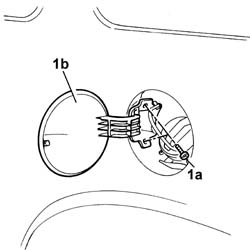
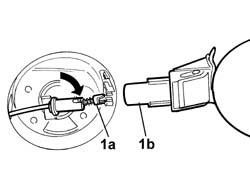
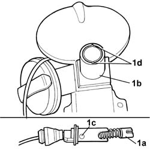

7210G82 fuel cap flap/cover
- Path
- Procedures > 72 PANELS AND FRAMES > 7210 REMOVING-REFITTING > 7210G accessory parts > 7210G82 fuel cap flap/cover
- Kind
- repair procedure (removal / refitting; the operation number is the code)
- Applies to
- all engines; all production periods
- Interactive page
- https://sloeber94.github.io/elrnDB-fDbl/en/#/2585271
Applies to: all engines; all production periods
 Removing
Removing
 Refitting
Refitting1. Undo the bolts (1a) and remove flap (1b) from its seating.

Applies to: all engines; all production periods; only with equipment: Sliding door
1. Disconnect the cable (1a) locking the sliding side door with the fuel flap open from its seating (1b) on the fuel flap.

Applies to: all engines; all production periods; only with equipment: Sliding door
Refitting
Removing1. Connect the cable (1a) locking the sliding side door with the fuel flap open, to its seating (1b) on the fuel flap, inserting the centring devices (1c) located on the cable, in the slots (1d) in the fuel flap seating.

Applies to: all engines; all production periods; only with equipment: Sliding door
Fit the flap and secure it using the bolts.